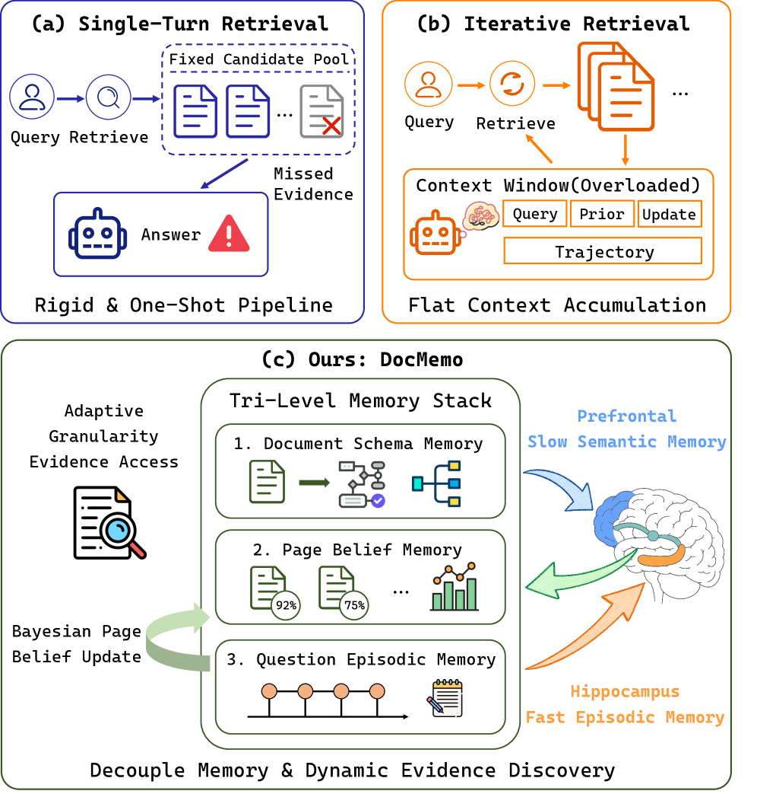
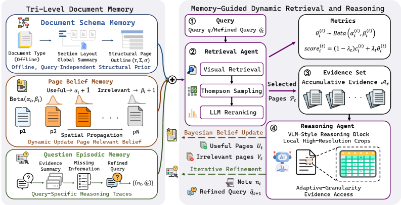

DocMemo: Probabilistic Memory-Guided Retrieval for Long Documents
TL;DR
- "DocMemo: Dynamic Evidence Discovery via Probabilistic Memory-Guided Retrieval for Multi-Modal Document Understanding" (arXiv 2608.07067; Hanshu Yao, Janfeng Zhong, Niu Lian, Jinpeng Wang; code released) reframes long-document QA as dynamic evidence exploration: instead of committing to a fixed top-k page set up front, maintain an explicit probabilistic belief over page relevance and update it with reasoning feedback each round.
- The machinery is a tri-level memory — offline Document Schema Memory (structure priors), Page Belief Memory (a Beta distribution per page, updated by Beta–Bernoulli conjugacy), and Question Episodic Memory (evidence notes + query rewrites) — driving Thompson-sampled page selection with spatial propagation to neighboring pages.
- It reports state-of-the-art on three long-document benchmarks: 71.3% overall on MMLongBench-Doc (+3.7 points over the strongest agentic baseline), +8.8 on LongDocURL, +15.0 on PaperTab; evidence recall climbs from 28.3% (round 1) to 69.6% (round 3), and ablating the Bayesian updating costs 2.5 points overall.
Why this matters
The memory systems this tracker follows (Zero-Mem, HiGram, MemexRL, AgentRunbook-C) mostly answer "what should the agent remember across a long horizon?" DocMemo answers a narrower but very load-bearing question: what should retrieval remember across rounds of a single task? Standard RAG is stateless — every round re-ranks by similarity to some query, and an early retrieval miss is unrecoverable because nothing records which pages have been tried, confirmed, or ruled out. Iterative-retrieval systems exist, but as the authors note, they haven't formalized how cross-round state should propagate.
DocMemo's answer is the classic bandit toolkit, applied at the page level: relevance is a latent Bernoulli parameter per page, the retriever's score is a prior, the reasoner's per-round verdicts are observations, and page selection is Thompson sampling over the posterior. That's a principled uncertainty-aware exploration story — uncertain pages keep getting chances, confirmed pages get exploited, refuted pages decay — rather than the usual "append the LLM's notes to the prompt" memory. For anyone doing context engineering over large corpora (not just PDFs), the pattern of retrieval state as posterior beliefs updated by reasoning feedback is the transferable idea, and it echoes the recsys-style retrieval angle this tracker recently picked up.
The core idea
Given a document \(D=\{p_i\}_{i=1}^{N}\) and query \(q\), DocMemo runs at most \(T\) retrieval–reasoning rounds, maintaining memory state \(\mathcal{M}^{(t)}=(\mathcal{M}_{\text{schema}},\mathcal{M}_{\text{belief}}^{(t)},\mathcal{M}_{\text{epi}}^{(t)}\)) — persistent document knowledge, dynamic retrieval state, and query-local reasoning experience, respectively (the paper cites the complementary-learning principle of separating persistent from dynamic information).
The heart is Page Belief Memory: each page's latent relevance is modeled by a Beta distribution \(\operatorname{Beta}(\alpha_i^{(t)},\beta_i^{(t)})\). Initialization comes from ColQwen2.5 late-interaction visual retrieval,
where \(\mathbf{q}_k\) are query-token embeddings and \(\mathbf{f}_{i,j}\) page \(p_i\)'s visual patch embeddings; after normalizing to \(c_i\in[0,1]\), the prior is \(\alpha_i^{(0)}=Sc_i+1,\ \beta_i^{(0)}=S(1-c_i)+1\), with \(S\) controlling prior strength. So the retriever's opinion enters as pseudo-counts, not as a hard ranking — it can be overturned by evidence.
How it works
Bayesian belief updating. After round \(t\) the reasoner labels a set of useful pages \(U_t\) and irrelevant pages \(V_t\) (unlabeled pages stay neutral). By Beta–Bernoulli conjugacy:
with posterior mean \(\mu_i\) as accumulated relevance confidence. Because evidence in documents is spatially local, positive feedback also propagates to neighbors: for \(i\in U_t\) and \(0<|j-i|\le r\), \(\alpha_j\leftarrow\alpha_j+\gamma^{|j-i|}\) (decay \(\gamma\), radius \(r\)); negative feedback is deliberately not propagated, to avoid suppressing relevant nearby pages.
Thompson-sampled retrieval. Each round samples \(\theta_i^{(t)}\sim\operatorname{Beta}(\alpha_i^{(t)},\beta_i^{(t)})\) and blends it with fresh visual similarity \(c_i^{(t)}\) to the current rewritten query \(\hat{q}_t\):
so retrieval shifts from similarity-driven to belief-driven as rounds accumulate. Top-scored candidates are reranked by an LLM using page summaries plus schema and episodic memory, merged into the cross-round accumulated set \(\mathcal{A}_t=\mathcal{A}_{t-1}\cup\mathcal{P}_t\), and evidence pages are chosen from \(\mathcal{A}_t\) by posterior mean — so earlier pages can be revisited when new evidence arrives.
The reasoner closes the loop. Reading the evidence pages plus memory context, it either answers, returns not_answerable, or emits a refined query \(\hat{q}_{t+1}\) and note \(n_t\) (appended to episodic memory) along with the labels \(U_t, V_t\) that drive the next belief update. For visually dense pages, adaptive-granularity access supplements full pages with high-resolution local regions (the paper flags table-heavy documents as the main beneficiary).

Figure 2 of the paper: tri-level memory (left) and the memory-guided retrieval loop with Thompson sampling and Bayesian belief updating (right).Offline: page embeddings + summaries; schema memory (type, section index, global summary)
Init: alpha_i = S*c_i + 1, beta_i = S*(1-c_i) + 1 from ColQwen2.5 scores
A_0 = {}; q_hat_1 = q
for t = 1..T:
sample theta_i ~ Beta(alpha_i, beta_i) for all pages # Thompson sampling
score_i = (1 - lambda_t) * sim(page_i, q_hat_t) + lambda_t * theta_i
C_t <- top-scoring candidate pages
P_t <- LLM rerank of C_t using schema + episodic memory
A_t <- A_{t-1} U P_t; evidence <- top pages of A_t by posterior mean mu_i
out <- reasoner(evidence + local regions, memory context)
if out is answer or not_answerable: return out
else: (q_hat_{t+1}, note n_t, U_t, V_t) <- out
episodic memory += (n_t, q_hat_{t+1})
alpha_i += 1 for i in U_t; beta_i += 1 for i in V_t
alpha_j += gamma^|j-i| for neighbors j of each i in U_t (|j-i| <= r)
return best available answer
Results
On MMLongBench-Doc, DocMemo reaches 71.3% overall — the best reported, and +3.7 points over the strongest agentic baseline — with the biggest category gains on tables (73.3%) and unanswerable questions (78.8%), the latter suggesting accumulated retrieval state helps the system know when it hasn't found evidence rather than hallucinate. For calibration: direct-reading proprietary models on the same leaderboard sit far lower (GPT-4o 46.3, Claude-4-Sonnet 50.4, Gemini-2.5-Pro 52.1). On LongDocURL the margin over the best agentic baseline is +8.8 points, and on PaperTab +15.0. A controlled comparison (same backbone, retriever, page budget, round budget, GPT-4.1 evaluation) preserves the win.
Ablations: removing tri-level memory drops overall accuracy 71.3 → 68.5; removing Bayesian belief updating → 68.8; disabling adaptive-granularity access hurts tables most. The iterative-retrieval analysis is the clearest evidence for the framing: cumulative evidence recall rises 28.3% → 69.6% and all-hit rate 12.9% → 58.1% across three rounds (round 2 contributing most), and against SimpleDoc it uses 0.41× the iterations at 1.18× the accuracy — a 2.40× efficiency ratio as they compute it.

Figure 3 of the paper: evidence recall and all-hit rate improve over retrieval–reasoning iterations (a); efficiency comparison vs SimpleDoc (b).How it connects
- The Case Against Generation for Retrieval (tracked, tutorial): Meta's argument that LLMs should power representations rather than generate over the index; DocMemo is the complementary move at inference time — the LLM never generates page IDs, it updates beliefs that gate a fast retriever.
- Zero-Mem, HiGram, MemexRL (tracked): agent-memory systems organized around structure (entity graphs, hierarchical subgraphs, archive-index-dereference). DocMemo's distinctive contribution to this cluster is calibrated uncertainty as the memory content — pseudo-counts instead of notes.
- AgentOPSD (tracked, tutorial): also maintains a recursive Bayesian belief state, but over trajectory success for credit assignment; the shared pattern — accumulate LLM-derived evidence in a conjugate posterior — is becoming a design motif.
- DataSpace (tracked): found multimodal evidence integration is the failure mode for data agents; DocMemo is a direct attack on that failure mode for documents.
Critical take
The Bayesian dressing is more principled than most memory papers, but look at what the "observations" are: \(U_t\) and \(V_t\) are an LLM's own judgments of usefulness, so the posterior is accumulating model opinions, not ground truth — a page repeatedly misjudged as irrelevant gets confidently buried, and the conjugate math launders that into what looks like calibrated confidence. The exploration story also does double duty: Thompson sampling's benefit vs simply taking the union of top-k over rewritten queries is not isolated in the ablations (only whole-module removals are), so we can't tell how much the sampling — as opposed to the accumulation — matters. The headline Table-1 comparison inherits leaderboard heterogeneity (different backbones per row); the controlled Table-2 comparison is the honest one, and its margins are presumably narrower (verify in the paper — the thread and HTML don't spell them out). Add four sensitivity-bearing hyperparameters (\(S\), \(\lambda_t\), \(r\), \(\gamma\)) and offline per-page summarization/embedding costs, and this is a strong engineering recipe with good diagnostics rather than a settled paradigm. The transferable idea survives the caveats, though: retrieval state as an explicit posterior, updated by reasoning feedback, beats stateless re-retrieval on every metric they measure.
If you remember three things
- Make retrieval stateful: model each candidate's relevance as a Beta posterior seeded by retriever scores (\(\alpha=Sc+1\)), updated by the reasoner's useful/irrelevant verdicts via conjugacy, and select with Thompson sampling blended with fresh similarity.
- Propagate positive evidence to spatial neighbors (decayed, radius-bounded) and never propagate negative evidence — document locality is a prior worth encoding, suppression is not.
- The payoff shows up as recovery: evidence recall 28.3% → 69.6% over three rounds and the largest gains on tables and unanswerable questions — exactly the cases where stateless top-k RAG silently fails.